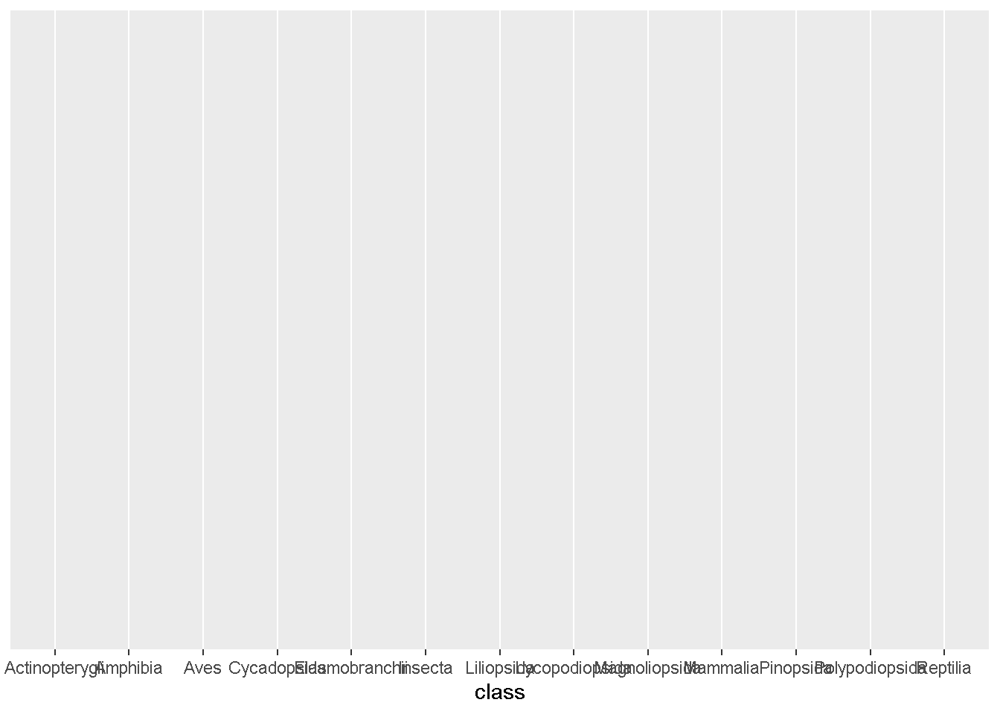
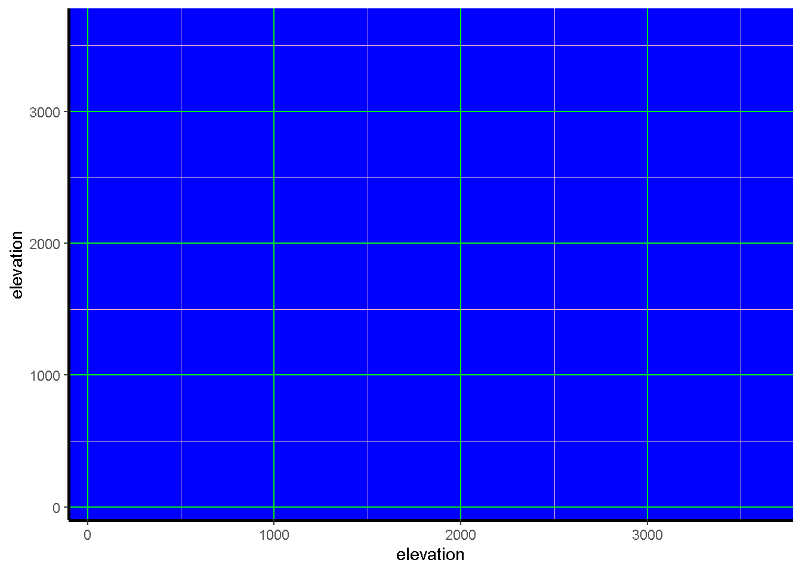
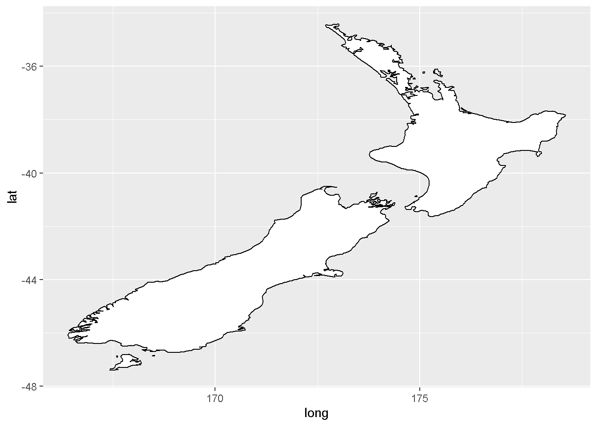
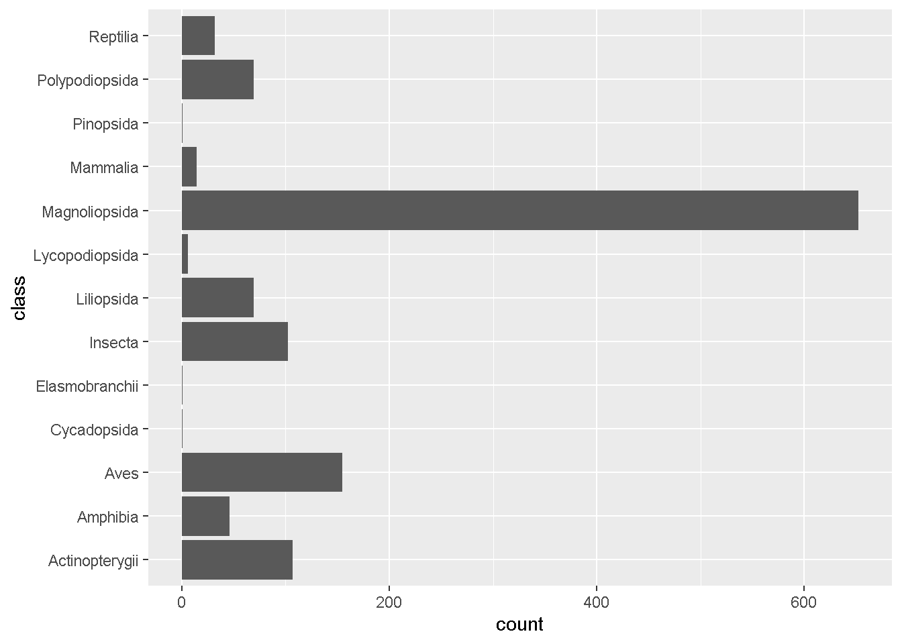
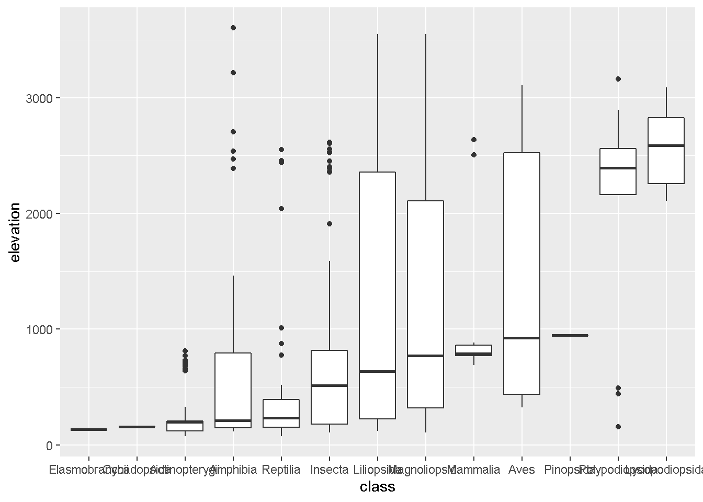
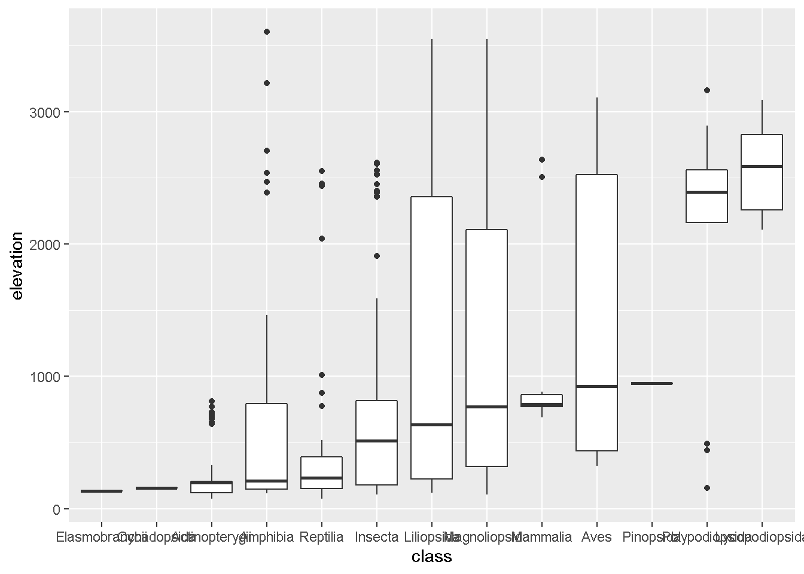

Chapter 9 Regresión lineal simple
En esta sesión vamos a conocer los fundamentos básicos para realizar una regresión lineal y como se realiza en R.
9.0.1 Regresión lineal
Mediante la regresión lineal, podemos predecir el valor de una variable depentiente “y” en función de una variable independiente “x” mediante la ecuación de la recta (yi=α+β*xi+ϵi). Además, la regresión lineal nos sirve como análisis exploratorio para observar si dos o mas variables se relacionan linealmente (si ‘x’ cambia entonces ‘y’ también cambiará en una magnitud similar)
A diferencia de la Anova, nuestra variable independiente “x” es usualmente una variable contínua y no una variable categórica, pero su notación es la misma:
lm(y ~ x)
Como vimos anteriormente, utilizamos la función lm (linear model)
Vamos a crear datos para realizar una regesión lineal simple. Para esto, debemos crear 3 componentes: respuesta (y) = parte deterministico (x) + parte estocástico (error).
Creamos la variable deterministica, es decir, datos definidos los cuales conocemos (30 valores aleatorios entre 15 y 150)
x <- runif(30,15,150)
x
- [1] 71.97069 15.94804 46.29660 119.80951 20.39606 128.25306 22.34313
- [8] 109.36358 25.24506 27.15949 144.08505 130.35870 133.14428 52.89453
- [15] 105.29167 35.71132 69.60025 83.29168 15.08388 134.36477 53.53003
- [22] 16.06731 127.06446 136.74516 93.26180 50.41654 95.80811 80.48248
- [29] 16.95275 52.72714Creamos la variable de respuesta (parte deterministica)
y.pred <- 20 + 2 * x
plot(x, y.pred, pch = 19)
summary(lm(y.pred ~ x)) # Obtenemos un R2 de 1 (ajuste perfecto), valor de p significativo (vemos que tiene 3 asteríscos indicando un alto nivel de significancia); es decir podemos predicir y perfectamente a traves de 20 + 2 * x
- Warning in summary.lm(lm(y.pred ~ x)): essentially perfect fit: summary may be
- unreliable
-
- Call:
- lm(formula = y.pred ~ x)
-
- Residuals:
- Min 1Q Median 3Q Max
- -2.537e-14 -9.631e-15 -2.872e-15 1.656e-15 1.195e-13
-
- Coefficients:
- Estimate Std. Error t value Pr(>|t|)
- (Intercept) 2.000e+01 8.840e-15 2.262e+15 <2e-16 ***
- x 2.000e+00 1.029e-16 1.943e+16 <2e-16 ***
- ---
- Signif. codes: 0 '***' 0.001 '**' 0.01 '*' 0.05 '.' 0.1 ' ' 1
-
- Residual standard error: 2.477e-14 on 28 degrees of freedom
- Multiple R-squared: 1, Adjusted R-squared: 1
- F-statistic: 3.775e+32 on 1 and 28 DF, p-value: < 2.2e-16Cuando trabajamos con datos reales, casi nunca encontramos un ajuste perfecto porque hay un error asociado a los datos que tiene su origin en otras factores que influyen la relación entre y y x (incluso errores en la medicion)
Ahora añadimos el componente estocástico (el error) a la variable respuesta:
y <- y.pred + rnorm(30,0,50) # el error viene de una distribucion normal con una media de 0Observamos mediante un gráfico como se relacionan ahora nuestras variables
plot(y ~ x, pch = 19)
summary(lm(y ~ x)) # Ahora el ajuste de la regresión es menor debido al error en y
-
- Call:
- lm(formula = y ~ x)
-
- Residuals:
- Min 1Q Median 3Q Max
- -102.912 -24.820 -2.161 21.795 108.645
-
- Coefficients:
- Estimate Std. Error t value Pr(>|t|)
- (Intercept) 29.7265 14.9390 1.99 0.0565 .
- x 1.9570 0.1739 11.25 6.72e-12 ***
- ---
- Signif. codes: 0 '***' 0.001 '**' 0.01 '*' 0.05 '.' 0.1 ' ' 1
-
- Residual standard error: 41.86 on 28 degrees of freedom
- Multiple R-squared: 0.8189, Adjusted R-squared: 0.8124
- F-statistic: 126.6 on 1 and 28 DF, p-value: 6.718e-129.0.2 Regresión a mano
Igual que en un anova, podemos calcular los parámetros de la regresión a mano mediante el método de la suma de cuadrados y la información del promedio de los datos.
Recordemos que hacemos uso de la ecuación de la recta = yi=α+β*xi+ϵi, en los que debemos calcular algunos parámetros con el método de la suma de cuadrados. En esta ecuación se nos presentan varios componentes:
yi o variable respuesta
α o intercepto, el cual es el valor de y cuando x = 0
β o pendiente (el valor de p que obtenemos nos dice si la pendiente es significativa diferente de 0 o no)
xi o variable predictora
ϵi o el error. Todos los modelos estadísticos tienen una varianza residual de información observada no tenida en cuenta en nuestros predictores y está direcamente relacionada con la variable respuesta a través de una distribución (típicamente una distribución normal, por lo menos para cumplir los supuestos de la regresión lineal). Para tener un mejor ajuste de nuestro modelo, debemos entender como se genero nuestra variable dependiente. De esta manera, nos aseguramos de escoger una distribución que describa nuestros datos y que capture el error residual correctamente (funcion rnorm())
Vamos a calcular la suma de cuadrados de nuestros datos
SSY <- sum((y - mean(y))^2) # sumas de cuadrados corregidas en y
SSX <- sum((x - mean(x))^2) # sumas de cuadrados corregidas en x
SSXY <- sum((x - mean(x)) * (y - mean(y))) # suma corregida de productos (covarianza de x e y en la expectativa)Pendiente:
b <- SSXY/SSX # máxima probabilidad de pendiente b
b
- [1] 1.956979Intercepto:
a <- mean(y) - b * mean(x) # Usamos la ecuación y valores promedio para calcular el intercepto
a
- [1] 29.72653Comprobamos:
summary(lm(y ~ x))
-
- Call:
- lm(formula = y ~ x)
-
- Residuals:
- Min 1Q Median 3Q Max
- -102.912 -24.820 -2.161 21.795 108.645
-
- Coefficients:
- Estimate Std. Error t value Pr(>|t|)
- (Intercept) 29.7265 14.9390 1.99 0.0565 .
- x 1.9570 0.1739 11.25 6.72e-12 ***
- ---
- Signif. codes: 0 '***' 0.001 '**' 0.01 '*' 0.05 '.' 0.1 ' ' 1
-
- Residual standard error: 41.86 on 28 degrees of freedom
- Multiple R-squared: 0.8189, Adjusted R-squared: 0.8124
- F-statistic: 126.6 on 1 and 28 DF, p-value: 6.718e-12De esta forma hemos calculado los parámetros que desconociamos en la ecuación de la recta. De esta forma tenemos lo siguiente:
y = α + β*x Esto significa que cuando x = 0, “y” es igual al valor en α, y la variable respuesta “y” aumenta β por cada unidad en x
y.amano = a + b*x
plot(y, y.amano)
Si queremos predecir el valor de y cuando x = 100 utilizando nuestra ecuación:
y.result <- a + b*100Ejercicio 1
- Utilizando los siguientes datos calcular el intercepto y la pendiente a mano mediante la suma de cuadrados:
x <- runif(20, 1, 20) y.pred <- 20 + 2 * x y <- y.pred + + rnorm(20,0,5)
Realizar una interpretación de los valores de la pentiente e intercepto teniendo en cuenta la siguiente información: Asuma que la variable “y” son datos del peso de roedores y que la variable “x” es información del tamaño de estos roedores
Utilizar la función de R para realizar la regresión lineal e interpretar el valor de R2 y valor de p
9.0.3 Indices de diversidad y regresión lineal
Ahora que conocemos como realizar una regresión lineal, vamos a utilizar los datos de la fundación COLTREE para explorar algunos índices que miden la biodiversidad y reaizar regresiones lineales con estos resultados.
En adición al set de datos taxonómicos, trabajaremos con datos medioambientales de cada parcela
Cargamos los datos
library(tidyverse)
- Warning: package 'tidyverse' was built under R version 4.0.5
- -- Attaching packages --------------------------------------- tidyverse 1.3.1 --
- v ggplot2 3.3.5 v purrr 0.3.4
- v tibble 3.1.4 v dplyr 1.0.7
- v tidyr 1.1.3 v stringr 1.4.0
- v readr 2.0.1 v forcats 0.5.1
- Warning: package 'ggplot2' was built under R version 4.0.5
- Warning: package 'tibble' was built under R version 4.0.5
- Warning: package 'tidyr' was built under R version 4.0.5
- Warning: package 'readr' was built under R version 4.0.5
- Warning: package 'dplyr' was built under R version 4.0.5
- Warning: package 'forcats' was built under R version 4.0.5
- -- Conflicts ------------------------------------------ tidyverse_conflicts() --
- x dplyr::filter() masks stats::filter()
- x dplyr::lag() masks stats::lag()
dat_spec <- read_csv("Species_Coltree.csv")
- Rows: 7534 Columns: 7
- -- Column specification --------------------------------------------------------
- Delimiter: ","
- chr (5): N_Familia, N_cientifico, Genero, Epiteto, Cod_HaCr
- dbl (2): Parcela, DAP
-
- i Use `spec()` to retrieve the full column specification for this data.
- i Specify the column types or set `show_col_types = FALSE` to quiet this message.
dat_env <- read_csv("Env_Coltree.csv")
- Rows: 141 Columns: 10
- -- Column specification --------------------------------------------------------
- Delimiter: ","
- chr (1): Zona_vida
- dbl (9): Parcela, Altitud, Temp_media, Rango_diurno_Temp, Est_Temp, Prec_anu...
-
- i Use `spec()` to retrieve the full column specification for this data.
- i Specify the column types or set `show_col_types = FALSE` to quiet this message.Algunas de las principales variables medioambientales
- Temp_media = Temperatura media anual
- Rango_diurno = Rango diurno promedio
- Est_T = Estacionalidad de la temperatura
- MaxTemp = Temperatura maxima del mes mas calido
- MinTemp = Temperatura minima del mes mas frio
- Rango_anual_T = Rango anual de temperatura
- T_media_tmh = Temperatura media del trimestre mas humedo
- T_media_tms = Temperatura media del trimestre mas seco
- T_media_tmc = Temperatura media del trimestre mas calido
- T_media_tmf = Temperatura media del trimestre mas frio
- Precip_anual = Precipitacion anual
- Precip_max = Precipitacion del mes mas humedo
- Precip_min = Precipitacion del mes mas seco
- Est_P = Estacionalidad de la precipitacion (Coeficiente de Variacion)
Para calcular la riqueza de especies (diversidad), debemos contar el número de especies presentes en cada sitio (parcela en nuestro caso)
conteo_parcela <- dat_spec %>%
group_by(Parcela) %>%
select(N_cientifico) %>%
unique() %>%
summarise(n = n())
- Adding missing grouping variables: `Parcela`
barplot(conteo_parcela$n)
riqueza <- conteo_parcela$nEn caso de contar con una matriz de abundancias, podemos convertir la matriz una matriz de presencia/ausencia y contar el número de especies; o utilizar el paquete vegan:
Convertimos nuestros datos a una matriz de abundancias:
dat_abun <- dat_spec %>%
select(Parcela, N_cientifico) %>% #Seleccionamos las variables deseadas
group_by(Parcela, N_cientifico) %>% # Agrupamos las observaciones por parcela y nombre de las especies
summarise(freq = n()) %>% # contamos el número de individuos para obtener la abundancia de cada especie
pivot_wider(names_from = N_cientifico, values_from = freq) # Mediante la función pivot_wider, convertimos la variable N_cientifico en columnas, y el conteo en observaciones a través de cada parcela. Para mayor información revise la función
- `summarise()` has grouped output by 'Parcela'. You can override using the `.groups` argument.Reemplazamos los NA por 0
dat_abun <- dat_abun %>%
replace(is.na(dat_abun), 0)
str(dat_abun) # Revisamos la matriz de abundancia creada
- grouped_df [141 x 572] (S3: grouped_df/tbl_df/tbl/data.frame)
- $ Parcela : num [1:141] 59001 59002 59003 59004 59005 ...
- $ Amaioua corymbosa : int [1:141] 2 1 0 0 4 0 0 2 1 0 ...
- $ Aspidosperma curranii : int [1:141] 1 0 5 0 1 0 0 0 4 0 ...
- $ Brownea stenantha : int [1:141] 2 0 0 0 0 0 0 0 0 0 ...
- $ Byrsonima arthropoda : int [1:141] 1 1 0 0 0 0 0 0 0 1 ...
- $ Capparis baducca : int [1:141] 1 0 0 0 0 0 0 0 0 0 ...
- $ Casearia javitensis : int [1:141] 3 0 0 1 2 0 4 0 0 0 ...
- $ Coccoloba lehmannii : int [1:141] 3 0 0 0 0 0 0 0 0 0 ...
- $ Dialium guianense : int [1:141] 2 1 0 0 1 0 0 0 3 0 ...
- $ Dichapetalum scandens : int [1:141] 1 0 0 0 0 0 0 0 0 0 ...
- $ Ephedranthus colombianus : int [1:141] 4 1 0 0 0 0 0 1 0 2 ...
- $ Erythroxylum citrifolium : int [1:141] 1 1 1 1 1 0 1 1 1 0 ...
- $ Eschweilera antioquensis : int [1:141] 2 1 1 0 4 1 3 0 0 1 ...
- $ Faramea capillipes : int [1:141] 2 0 0 0 0 0 0 0 0 2 ...
- $ Helianthostylis sprucei : int [1:141] 1 3 0 0 0 1 1 1 0 2 ...
- $ Helicostylis tomentosa : int [1:141] 1 0 0 0 1 0 0 0 3 1 ...
- $ Himatanthus articulatus : int [1:141] 8 0 0 0 0 1 0 0 0 1 ...
- $ Inga multijuga : int [1:141] 3 0 0 0 0 0 0 0 0 1 ...
- $ Lacistema aggregatum : int [1:141] 2 0 0 0 0 0 1 0 0 0 ...
- $ Machaerium capote : int [1:141] 1 1 0 0 0 0 0 0 0 0 ...
- $ Memora aspericarpa : int [1:141] 1 1 2 1 5 2 2 1 2 1 ...
- $ Miconia magdalenae : int [1:141] 1 0 0 0 0 0 0 0 0 0 ...
- $ Mimosa antioquiensis : int [1:141] 1 0 0 0 0 0 0 0 0 0 ...
- $ Minquartia guianensis : int [1:141] 1 0 0 0 0 0 0 0 0 2 ...
- $ Peltogyne paniculata : int [1:141] 2 1 0 0 0 0 0 0 0 0 ...
- $ Pourouma cecropiifolia : int [1:141] 1 1 0 1 0 1 1 0 5 0 ...
- $ Protium aracouchini : int [1:141] 2 0 4 0 1 1 0 2 4 2 ...
- $ Pseudolmedia laevigata : int [1:141] 1 1 3 4 1 2 0 1 2 0 ...
- $ Psychotria erecta : int [1:141] 1 2 0 0 0 0 1 0 1 0 ...
- $ Psychotria poeppigiana : int [1:141] 1 0 0 0 0 1 0 0 0 0 ...
- $ Rourea adenophora : int [1:141] 1 0 1 1 0 2 4 1 0 1 ...
- $ Ryania speciosa : int [1:141] 1 1 0 0 2 1 0 2 0 1 ...
- $ Salacia impressifolia : int [1:141] 1 0 0 0 0 0 0 0 0 0 ...
- $ Senna dariensis : int [1:141] 1 0 0 0 0 0 1 0 0 0 ...
- $ Swartzia macrophylla : int [1:141] 2 0 0 0 2 0 1 0 0 0 ...
- $ Talisia princeps : int [1:141] 1 1 0 0 0 1 0 1 1 1 ...
- $ Virola flexuosa : int [1:141] 1 1 0 0 0 0 0 0 0 1 ...
- $ Virola sebifera : int [1:141] 4 4 2 1 3 0 2 0 6 0 ...
- $ Xylopia amazonica : int [1:141] 2 4 7 0 1 0 1 1 1 1 ...
- $ Zygia latifolia : int [1:141] 10 2 0 0 0 0 0 0 0 0 ...
- $ Apeiba membranacea : int [1:141] 0 1 0 0 0 0 0 0 0 0 ...
- $ Bellucia axinanthera : int [1:141] 0 1 0 18 23 2 13 1 0 0 ...
- $ Bertiera guianensis : int [1:141] 0 1 0 0 0 0 0 0 0 0 ...
- $ Brosimum guianense : int [1:141] 0 1 0 0 0 0 0 0 0 1 ...
- $ Caryocar glabrum : int [1:141] 0 1 1 0 0 0 0 2 1 0 ...
- $ Clidemia hirta : int [1:141] 0 1 0 0 0 0 0 0 1 0 ...
- $ Cordia bicolor : int [1:141] 0 1 0 0 0 0 0 0 0 0 ...
- $ Ficus insipida : int [1:141] 0 1 0 0 0 0 0 0 0 0 ...
- $ Guapira costaricana : int [1:141] 0 2 0 0 0 0 0 0 0 0 ...
- $ Heisteria concinna : int [1:141] 0 1 0 0 0 0 0 0 0 0 ...
- $ Inga pezizifera : int [1:141] 0 1 0 2 0 1 0 0 0 6 ...
- $ Inga umbellifera : int [1:141] 0 3 0 0 0 0 0 0 0 0 ...
- $ Jacaranda copaia : int [1:141] 0 4 0 1 0 0 0 0 0 0 ...
- $ Lindackeria laurina : int [1:141] 0 9 0 0 0 0 0 0 0 0 ...
- $ Maripa nicaraguensis : int [1:141] 0 1 0 0 0 0 0 1 0 1 ...
- $ Matayba adenanthera : int [1:141] 0 1 2 1 0 0 0 2 2 2 ...
- $ Miconia trinervia : int [1:141] 0 1 0 1 0 0 0 0 0 0 ...
- $ Mimosa quadrivalvis : int [1:141] 0 1 0 0 0 0 0 0 0 0 ...
- $ Ouratea lucens : int [1:141] 0 1 1 0 1 0 0 0 0 0 ...
- $ Oxandra venezuelana : int [1:141] 0 1 0 0 0 0 0 0 0 0 ...
- $ Pouteria collina : int [1:141] 0 2 0 0 1 3 0 1 0 1 ...
- $ Simaba cedron : int [1:141] 0 1 1 1 0 0 0 0 0 0 ...
- $ Swartzia santanderensis : int [1:141] 0 1 0 0 0 0 0 1 2 0 ...
- $ Tabebuia chrysantha : int [1:141] 0 1 0 0 0 0 0 0 0 0 ...
- $ Tapirira guianensis : int [1:141] 0 1 1 3 3 1 1 1 3 3 ...
- $ Zygia longifolia : int [1:141] 0 1 0 0 0 0 0 0 0 0 ...
- $ Aniba perutilis : int [1:141] 0 0 3 0 0 1 0 0 0 0 ...
- $ Aniba puchury-minor : int [1:141] 0 0 1 0 0 0 0 0 0 0 ...
- $ Doliocarpus dentatus : int [1:141] 0 0 4 1 2 1 1 1 0 0 ...
- $ Guatteria cargadero : int [1:141] 0 0 4 3 12 8 0 1 1 2 ...
- $ Ladenbergia magnifolia : int [1:141] 0 0 11 0 1 0 0 0 0 0 ...
- $ Miconia prasina : int [1:141] 0 0 1 1 1 0 0 0 2 0 ...
- $ Mouriri chamissoana : int [1:141] 0 0 2 0 0 0 0 0 1 0 ...
- $ Ocotea guianensis : int [1:141] 0 0 9 5 3 0 0 0 1 0 ...
- $ Ormosia corcovada : int [1:141] 0 0 1 0 0 0 0 0 0 0 ...
- $ Psychotria brachybotrya : int [1:141] 0 0 1 0 0 0 0 0 0 0 ...
- $ Sloanea gracilis : int [1:141] 0 0 1 0 1 0 0 0 1 0 ...
- $ Tontelea ovalifolia : int [1:141] 0 0 2 0 1 1 0 1 2 1 ...
- $ Abarema jupunba : int [1:141] 0 0 0 1 0 0 0 0 0 0 ...
- $ Aparisthmium cordatum : int [1:141] 0 0 0 1 0 0 0 0 0 0 ...
- $ Conceveiba guianensis : int [1:141] 0 0 0 2 0 1 0 0 0 0 ...
- $ Goupia glabra : int [1:141] 0 0 0 1 0 0 0 0 0 0 ...
- $ Helicostylis tovarensis : int [1:141] 0 0 0 1 0 0 0 0 0 0 ...
- $ Humiriastrum colombianum : int [1:141] 0 0 0 1 0 0 0 0 0 0 ...
- $ Inga heterophylla : int [1:141] 0 0 0 2 0 0 1 0 1 0 ...
- $ Inga sertulifera : int [1:141] 0 0 0 2 0 0 0 0 2 0 ...
- $ Lacmellea floribunda : int [1:141] 0 0 0 1 0 1 0 0 0 0 ...
- $ Miconia poeppigii : int [1:141] 0 0 0 5 13 0 0 0 1 0 ...
- $ Xylopia aromatica : int [1:141] 0 0 0 2 2 0 2 0 2 10 ...
- $ Xylopia discreta : int [1:141] 0 0 0 2 0 2 0 0 0 0 ...
- $ Leonia triandra : int [1:141] 0 0 0 0 1 1 2 4 2 0 ...
- $ Miconia elata : int [1:141] 0 0 0 0 1 0 0 0 3 0 ...
- $ Vismia angusta : int [1:141] 0 0 0 0 1 0 0 0 0 0 ...
- $ Clathrotropis brunnea : int [1:141] 0 0 0 0 0 1 0 1 0 2 ...
- $ Dendrobangia boliviana : int [1:141] 0 0 0 0 0 1 0 0 0 0 ...
- $ Miconia minutiflora : int [1:141] 0 0 0 0 0 1 0 0 0 0 ...
- $ Miconia triplinervis : int [1:141] 0 0 0 0 0 1 0 0 0 0 ...
- $ Naucleopsis glabra : int [1:141] 0 0 0 0 0 3 0 0 0 1 ...
- $ Sabicea villosa : int [1:141] 0 0 0 0 0 1 0 0 0 0 ...
- [list output truncated]
- - attr(*, "groups")= tibble [141 x 2] (S3: tbl_df/tbl/data.frame)
- ..$ Parcela: num [1:141] 59001 59002 59003 59004 59005 ...
- ..$ .rows : list<int> [1:141]
- .. ..$ : int 1
- .. ..$ : int 2
- .. ..$ : int 3
- .. ..$ : int 4
- .. ..$ : int 5
- .. ..$ : int 6
- .. ..$ : int 7
- .. ..$ : int 8
- .. ..$ : int 9
- .. ..$ : int 10
- .. ..$ : int 11
- .. ..$ : int 12
- .. ..$ : int 13
- .. ..$ : int 14
- .. ..$ : int 15
- .. ..$ : int 16
- .. ..$ : int 17
- .. ..$ : int 18
- .. ..$ : int 19
- .. ..$ : int 20
- .. ..$ : int 21
- .. ..$ : int 22
- .. ..$ : int 23
- .. ..$ : int 24
- .. ..$ : int 25
- .. ..$ : int 26
- .. ..$ : int 27
- .. ..$ : int 28
- .. ..$ : int 29
- .. ..$ : int 30
- .. ..$ : int 31
- .. ..$ : int 32
- .. ..$ : int 33
- .. ..$ : int 34
- .. ..$ : int 35
- .. ..$ : int 36
- .. ..$ : int 37
- .. ..$ : int 38
- .. ..$ : int 39
- .. ..$ : int 40
- .. ..$ : int 41
- .. ..$ : int 42
- .. ..$ : int 43
- .. ..$ : int 44
- .. ..$ : int 45
- .. ..$ : int 46
- .. ..$ : int 47
- .. ..$ : int 48
- .. ..$ : int 49
- .. ..$ : int 50
- .. ..$ : int 51
- .. ..$ : int 52
- .. ..$ : int 53
- .. ..$ : int 54
- .. ..$ : int 55
- .. ..$ : int 56
- .. ..$ : int 57
- .. ..$ : int 58
- .. ..$ : int 59
- .. ..$ : int 60
- .. ..$ : int 61
- .. ..$ : int 62
- .. ..$ : int 63
- .. ..$ : int 64
- .. ..$ : int 65
- .. ..$ : int 66
- .. ..$ : int 67
- .. ..$ : int 68
- .. ..$ : int 69
- .. ..$ : int 70
- .. ..$ : int 71
- .. ..$ : int 72
- .. ..$ : int 73
- .. ..$ : int 74
- .. ..$ : int 75
- .. ..$ : int 76
- .. ..$ : int 77
- .. ..$ : int 78
- .. ..$ : int 79
- .. ..$ : int 80
- .. ..$ : int 81
- .. ..$ : int 82
- .. ..$ : int 83
- .. ..$ : int 84
- .. ..$ : int 85
- .. ..$ : int 86
- .. ..$ : int 87
- .. ..$ : int 88
- .. ..$ : int 89
- .. ..$ : int 90
- .. ..$ : int 91
- .. ..$ : int 92
- .. ..$ : int 93
- .. ..$ : int 94
- .. ..$ : int 95
- .. ..$ : int 96
- .. ..$ : int 97
- .. ..$ : int 98
- .. ..$ : int 99
- .. .. [list output truncated]
- .. ..@ ptype: int(0)
- ..- attr(*, ".drop")= logi TRUE9.0.4 Paquete vegan
install.packages(“vegan”)
library(vegan)
- Warning: package 'vegan' was built under R version 4.0.5
- Loading required package: permute
- Loading required package: lattice
- Warning: package 'lattice' was built under R version 4.0.5
- This is vegan 2.5-7Dado que vegan trabaja con data.frames debemos transformar el tibble a un data.frame y seguir con programar en R (y no tidyverse)
abd <- as.data.frame(dat_abun)Asignar la primera columna (Parcela) como nombre de las filas
rownames(abd) <- abd[,1]
dat_abun <-dat_abun[,-1]Contar especies con una matriz de presencia/ausencia
pa <- replace(abd, abd > 0, 1) # Convertimos la matriz de abundancias en una matriz de presencia/ausencia.
riqueza <- apply(pa, 1, sum) # Sumamos las especies presentes en cada parcela para estimar su riqueza.
barplot(riqueza)
Tambien podemos generar la matriz de abundancias de manera tradicional utilizando tabla de conteo:
abd2 <- as.data.frame.matrix(table(dat_spec$Parcela, dat_spec$N_cientifico))
riqueza2 <- specnumber(abd)
# verificamos si las dos vías conducen al mismo resultado
plot(riqueza, riqueza2)
A partir de la matriz de abundacias, podemos calcular índices de diversidad como shannon o simpson mediante la función diversity() del paquete vegan. Utilice la función diversity() para calcular el indice de shannon.
div <- diversity(dat_abun, index = "shannon")Ahora Vamos a relacionar la riqueza de especies (o diversidad) con algunos de los factores ambientales de las parcelas.
plot(riqueza ~ dat_env$Temp_media, pch=19, cex=0.5)
Riqueza ~ T_media
reg <- lm(riqueza ~ dat_env$Temp_media) # Ajustamos un modelo con la riqueza de especies y la temperatura media
summary(reg)
-
- Call:
- lm(formula = riqueza ~ dat_env$Temp_media)
-
- Residuals:
- Min 1Q Median 3Q Max
- -19.5299 -4.9216 0.0015 4.8653 21.3207
-
- Coefficients:
- Estimate Std. Error t value Pr(>|t|)
- (Intercept) -5.3239 2.1833 -2.438 0.016 *
- dat_env$Temp_media 1.2806 0.1015 12.611 <2e-16 ***
- ---
- Signif. codes: 0 '***' 0.001 '**' 0.01 '*' 0.05 '.' 0.1 ' ' 1
-
- Residual standard error: 8.186 on 139 degrees of freedom
- Multiple R-squared: 0.5336, Adjusted R-squared: 0.5303
- F-statistic: 159 on 1 and 139 DF, p-value: < 2.2e-16
plot(riqueza ~ dat_env$Temp_media, pch=19, cex=0.5)
abline(reg, col = "red")
Ejercicio 2
- Con base a los resultados de la regresión lineal, reponda las siguientes preguntas:
- ¿La riqueza de especies depende de la temperatura?
- ¿Cuál resultado de la regresión demuestra eso?
- ¿Cuánta varianza explica la temperatura en la variación de la riqueza de especies?
- Añadir etiquetas a los ejes de la gráfica anterior e insertar una leyenda con el valor de R^2 y la ecuación de la línea de regresión.
Ejercicio 3
Realizar regresiones con las otras variables ambientales y determinar cuales de ellas pueden explicar la variabilidad en riqueza a traves del gradiente altitudinal.
Repetir el mismo analisis pero ahora con el Indice de Shannon como variable independiente. Los resultados son congruentes?
Mostrar los resultados de todos estos analisis en gráficos de dispersión con una línea de tendencia y su respectiva leyenda.
9.0.5 Supuestos de la regresión lineal
Para poder validar los resultados de nuestra regresión lineal, debemos saber si nuestro modelo cumple con los supuestos o requisitos asociados al modelo:
- Linealidad: Debido a que la ecuación de la recta que se emplea en la regresión lineal, la relación entre las variables dependientes e independientes debe ser lineal. Esto puede ser observado fácilmente mediante el diagrama de dispersión:
plot(riqueza ~ dat_env$Temp_media, pch=19, cex=0.5)
lm <- lm(riqueza ~ dat_env$Temp_media)
abline(lm, col="red") 
Podemos observar que es probable que los datos no se relacionan linealmente y ajustar una relación lineal podría resultar en resultados erroneos
- Independencia de los residuos: Los residuos deben ser independientes entre sí y representan una variable aleatoria, es decir, que la predicción de un valor los residuos no es afectada por los residuos cercanos. Podemos probar este supuesto mediante el test de durbin-watson:
library(lmtest)
- Warning: package 'lmtest' was built under R version 4.0.5
- Loading required package: zoo
- Warning: package 'zoo' was built under R version 4.0.5
-
- Attaching package: 'zoo'
- The following objects are masked from 'package:base':
-
- as.Date, as.Date.numeric
dwtest(lm) # En esta prueba, valores de DW alrededor de 2 y p significativos significan que los residuos son independientes (normalmente se considenran valores entre 1.5 y 2.5)
-
- Durbin-Watson test
-
- data: lm
- DW = 1.2752, p-value = 5.06e-06
- alternative hypothesis: true autocorrelation is greater than 0- Residuos constantes “homocedasticidad”: Los residuos (diferencia entre los valores observados de la variable dependiente respecto a los valores predecidos mediante la ecuación de la recta) deben ser constantes. Esto quiere decir que los residuos no aumentan ni disminuyen a medida que se predicen valores más grandes o pequeños. Podemos observar este supuesto graficando nuestro vector de regresión lineal:
plot(lm) # Al graficar esto presionamos enter en la consola y debemos observar la primera gráfica "Residual vs Fitted". Al haber homocedasticidad, la linea roja debe observarse como una linea recta. Con nuestros datos parece complirse este supuesto. 

Normalidad de residuos: Los residuos deben presentan una distribución normal. Mediante la gráfica de histograma y la prueba de shaphiro-wilk podemos probar este supuesto:
hist(lm$residuals, 15) # Los residuos parecen ajustarse a una distribución normal
?shapiro.test
shapiro.test(lm$residuals) # Con el valor de p de la prueba, aceptamos la hipótesis nula ya que p > 0.05, por lo que los residuos si presentan una distribución normal
-
- Shapiro-Wilk normality test
-
- data: lm$residuals
- W = 0.99037, p-value = 0.4452